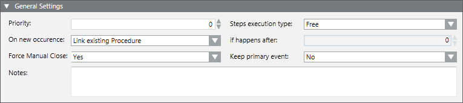

Configure the General Settings of the Operating Procedure
You must specify the general parameters of an operating procedure.
- Select Project > System Settings > Operating Procedures > […] > [operating procedure].
- In the Operating Procedure tab, open the General Settings expander.
- Enter values in the following fields:
- Priority
- Steps Execution Type
- On new occurrence/If happens after
- Force manual close
- Keep primary event
- Notes
